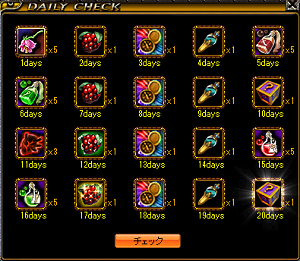

- TOP
- 計算機 »
- 秘密
- Gv
- 支援BIS »
- アイテム »
- クエ »
- その他 »
- リンク
- BBS
- 管理者へメール
- TOP
- 計算機 »
- 秘密
- Gv
- 支援BIS »
- アイテム »
- クエ »
- その他 »
- リンク
- BBS
- 管理者へメール
| 18.7.25 | 本日７／２５（水）より、またログインキャンペーンが始まっています |
|---|---|
| 金鯖スタートと同時に ログインキャンペーンがまた始まっています。 今回は７/２５（水）～９/４（火）２３：５９までの４２日間で、 第１が２０マス、第２が１０マス、第３が５マス、計３５マス。 余裕は７日間。 ログインキャンペーンマップのページ |
|
| 18.7.1 | ６／２８（木）より、ログインキャンペーンが行われています |
| アナウンスが遅れてしまいましたが、 ログインキャンペーンがまた始まっています。 今回は６/２８（木）～７/２４（火）２３：５９までの２７日間で、 第１が１０マス、第２、第３が５マス、計２０マス。 余裕は計７日、 本日から始めた場合、４日の余裕があります。 ログインキャンペーンマップのページ |
|
| 18.5.9 | ログインキャンペーンが始まっています |
| 本日よりログインキャンペーンが始まっています。 今回は５/９（水）～６/２７（水）２３：５９までの５０日間で、 第１が２０マス、第２が１０マス、第３が５マス、計３５マス。 １５日間の余裕があります。 ログインキャンペーンマップのページ |
|
| 18.3.28 | ログインキャンペーンと冒険家感謝祭がまたまた始まっています |
| 本日よりまたまたログインキャンペーンが始まっています。 今回は３/２８（水）～４/２５（水）メンテ前までの２９日間で、 第１、第２が各５マス、第３が１０マス、計２０マス。 ９日間の余裕があります。 今回のログインキャンペーンはいつもと違い、コクーン祭りの模様。 コクーン系がたくさんもらえるようです。 ログインキャンペーンマップのページ 合わせて、 冒険家感謝祭も始まっています。 もらえるものはいつもと同じ、 ・パワキ１時間版 ×１０ ・プチポタ１時間版 ×１０ ・PortTownBox ×３ ・ユスピナのクリスタル ×１ これもいつもと同じく 期限（４／２５メンテ前まで）を過ぎてしまうと受け取れなくなるので、 必要な人は、期限内に忘れずにWeb倉庫から取り出しましょう。 |
|
| 18.2.24 | ログインキャンペーンがまた始まっています |
| 本日よりまたログインキャンペーンが始まっています。 今回は２/２４（土）～３/２０（火）２３：５９までの２５日間で、 第１が各１０マス、第２、第３が５マス、計２０マス。 ５日間しか余裕がないので、コンプリート目指す方は注意を。 ログインキャンペーンマップのページ |
|
| 18.１.24 | ログインキャンペーンが始まっています |
| 本日よりログインキャンペーンが始まっています。 今回は１/２４（水）～２/２３（金）２３：５９までの３１日間で、 第１、第２が各１０マス、第３が５マス、計２５マス。 ６日間しか余裕がないので、コンプリート目指す方は注意を。 ログインキャンペーンマップのページ |
|
| 18.1.9 | 「メインクエスト進行中」が２つに分裂する現象についての情報募集中 |
| 現在、なんらかの原因で クエ欄の「メインクエスト進行中」が２つに増えてしまう不具合があるようです。 ・どこで発生したか ・発生後にどういう挙動をしたか などの状況が分かる方がいたら 報告いただけるとありがたいです。 ◆追記：修正されたようです（18/01/24） 特定の条件で警備隊長イリマに話しかけると発生していた模様。 18/01/24のアップデートで修正されたようです。 |
|
| 18.1.2 | メインクエ２ チャプター４ 攻略チャート 作成 |
| メインクエ２ チャプター４の攻略チャートを作成しました。 とりあえずラストまでのチャートが出来ました。 ブラッシュアップはぼちぼちやっていきます。 エラーや何か気がついた点があったら、教えていただけると幸いです。 |
|
| 18.1.2 | メインクエ２ チャプター３ 攻略チャート 作成 |
| メインクエ２ チャプター３の攻略チャートを作成しました。 エラーや何か気がついた点があったら、教えていただけると幸いです。 |
|
| 18.1.1 | メインクエ２ チャプター２ 攻略チャート 作成 |
| メインクエ２ チャプター２の攻略チャートを作成しました。 本年もよろしくお願い致します。 |
|
| 17.12.30 | メインクエ２ チャプター１ 攻略チャート 作成 |
| メインクエ２ チャプター１の攻略チャートを作成しました。 画像加工やら細かい詰めが色々飛んでますが、おいおいやります。 続きも順次まとめて上げていく予定です。 |
|
| 17.12.29 | ◆注意◆ キャンサーの巣 Ｂ２で閉じ込められる件と、脱出出来たケースについての情報 |
| 特定の環境において、 キャンサーの巣Ｂ２に入ると強制を食らい、以後そのキャラでＩＮ出来なくなる（強制を食らう）ようです。 公式サイトでも以下のリンクで発表されており、現在開発元に調査依頼中のようです。 マップ「キャンサーの巣B2」へ移動した際に強制終了してしまう件につきまして ◆追記：修正されたようです（18/01/24） 18/01/24のアップデートで修正されたようです。 ただ、起こる可能性が完全になくなったかはまだ分からないので、 ご注意を。 ◆追記 18/1/2◆ デイリーチェックの画面を出しながら、移動だけでなく狩りも出来、ＵＰも出来るそうです。 詳しくはこちらより。 私が聞いた限りでは、 Ｗｉｎｄｏｗｓ１０のＰＣで起こるケースが多いようです。 私はＷｉｎｄｏｗｓ７のＰＣを使ってクエを行い、幸い強制は起こりませんでした。 また、 知り合いがＷｉｎｄｏｗｓ１０のＰＣで強制を食らい、閉じ込められましたが、 その後、別のＰＣ（ＯＳはＷｉｎｄｏｗｓ７）で起動した所、起動成功、脱出出来たそうです。 ＯＳの違いが直接および全ての原因かどうかは分かりませんが、関わっている可能性はあると思います。 根本的には開発側の対応待ちですが、早急に解決する事を願います。 ◆追記◆ １日の最初にログインするとデイリーチェックの画面が出てきますが、  これが出ている間は強制落ちしないらしく、 デイリーチェックの画面を出したままキャラを動かして脱出可能だそうです。 見つけた人すごいなあ。 脱出後、 デイリーチェックを終わらせてからもう一度キャンサーの巣Ｂ２に入ると、また強制地獄の刑になるようなので、 一度強制を食らった人は、修正が来るまでキャンサーの巣Ｂ２には入らない方がよさそうです。 |
|
| 17.12.28 | メインクエ２ Ｃｈａｐｔｅｒ１ のメモ書き |
| メインクエ２をしながら、少しずつまとめています。 コンテンツとしてＵＰするのはもう少し時間がかかりそうなので、 やってみて時間がかかった所や移動方法などを メモ書きの形でとりあえずここに載せていきます。 ◆Ｃｈａｐｔｅｒ１ 秘密は１個（１－９－５）。 ◆１－１－１ 消息 ハンヒ山脈／ドレム川付近（１３２，１４）付近にある 剣がささってる岩のオブジェをクリックしてUP。 ◆１－１－２ 襲撃 １－１－１と同じオブジェを触ってUP。 私は周囲のＭＯＢを何匹か倒してから触ったが、 MOBを倒さず、ただ触るだけでよいかもしれない。 ◆１－１－３ 悲しき骸たちの帰還 ★幻影の谷／BFD付近 漆黒の城への移動ポータルから右上方面（２０９，６６）付近の岩。 ボルティッシュから走った方が早いかも。 ★スパインビーチ マップ一番左上方面（３０，４１）のテント。 ★ラカリフサ北の洞窟 （７１，２４）付近のガイコツ。 ★展示場 ミラーテレポータ １１１２７ で直通。 マップ一番右上方面（１１４，２４）付近のガイコツ。 ◆１－２－１ 残された者たちの涙 現在クエ欄の表記が間違っているようで、 １－２－○が全て１－３－○と表記されている。 クエ欄を開き、一番右上の「クエスト一覧」タブでメインクエ２の部分を見ると、１－２－○となっている。 ◆１－２－２ 墓守メーティス ★ハイランド洞窟 Ｂ１ への行き方 ジョン・マルコ １４１２１ で直通。 ◆１－２－３ 枯れない花 ★キャンサーの巣 Ｂ２ への行き方 ミラーテレポータ １１１２３ でＢ４に飛び、そこからＢ２へ。 ◆１－３－１ 協会の危機 ★塔Ｂ１への行き方 一般クエスト担当 １３５１１ で直通。 ◆１－３－３ 物資の調達 ★襲撃を受けた商人 マップ中央付近（１７５，１０７） ★スナッチャー グレートマウンテン北部のマップ一番右上の方。 ◆１－３－４ ロングテールの娼館 ロングテールの娼館に入り、右上にいるローラに話して奥の部屋へ。 そこにリンウードがいる。 ★暖房の燃料 ハンヒ山脈／ドレム川付近 マップ中央一番↓方面（１６７，２７７） ◆１－３－５ 失われたネックレス ミラーテレポータ １１１２３ でキャンサーの巣Ｂ４に飛ぶ。 ★ロングテール民１ Ｂ４の右上からＢ３に入り、マップ一番右上方面（１５７，１４） ★ロングテール民2 ロングテール民１から、すぐ上の移動ポータルでＢ２へ。 左へ回り、左から2番目の移動ポータルに入り、Ｂ３に降りてすぐの所（３９，２６） ★ロングテール民3 ミラーテレポータに戻ってＢ４へ飛びなおし、中央の移動ポータルからＢ３へ入って少し上（１０６，１４９） ◆１－３－１０ ロングテールを照らす星 ★塔Ｂ２ デスピンサー 一般クエスト担当 １３５１１ で塔Ｂ１へ飛び、そこから走り ◆１－４－４ 協力要請 ★エステルの別荘 オロイン森（１１，６０）付近 ◆１－５－２ 報告書作成Ⅱ ★スウェブＢ４への行き方 ジョン・マルコ １４４１１ でＢ５に飛び、走り ◆１－５－４ 報告書作成Ⅳ ★塔Ｂ６への行き方 一般クエスト担当 １４３２１ で直通 ◆１－９－５ 追跡 秘密ダンジョン。ボス戦あり。 ★ポタ出し ロングテール付近の狩場で、ＰＴを組んだ状態で何匹かＭＯＢを狩るとポタが出る。 ＰＴ目的はなんでも可。 ★ソロ可能 連動マップは古都（グループ３）。 ★秘密内 一本道でひたすら進んでいく。 この秘密に限らず、全てライトドラグーンの翼推奨。 突き当たりでＮＰＣと会話、さらにもう一度話しかけてボス戦。 赤くてデカいコウモリ（ガフ：Ｌｖ４００）。 |
|
| 17.11.16 | ログインキャンペーンが始まっています |
| 本日よりログインキャンペーンが始まっています。 今回は１１/１６（木）～１２/１３（水）２３：５９までの２８日間で、 第１、第２が各１０マス、第３が５マス、計２５マス。 ３日間しか余裕がないので、コンプリート目指す方は注意を。 ログインキャンペーンマップのページ |
|
| 17.7.29 | 恩寵クエ 更新 |
| ・光恩寵 ・闇恩寵 ・恩寵強化 の各クエを追加しました。 |
|
| 17.7.29 | ログインキャンペーンが始まっています |
| 本日よりログインキャンペーンが始まっています。 今回は７/２９（土）～９/６（水）２３：５９までの４０日間で、 第１、第２、第３が各１０マス、計３０マス。 １０日間の余裕があります。 ログインキャンペーンマップのページ | |
| 17.7.26 | レポートクエ計算機 更新 |
| ・レポートクエ２ に対応 ・適正／適正外 に対応 ・スフィア、パワキ、ネカフェのON/OFF機能 を追加 などを盛り込んで、計算機を作り直しました。 おかしな所があったら指摘いただけると幸いです。 | |
| 17.3.29 | ５次転生クエ（Ａルート、Ｂルート） 作成 |
| ５次転生クエのチャートを作成しました。 ５次転生による特典については、一部まとめていない項目があります。 後日追記する予定です。 | |
| 16.12.28 | キャンペーン・イベント・その他のメモ |
| キャンペーンおよびイベントがたくさん来ているので、メモ的にまとめました。 ◆高額買い取りイベント 鯖によって期間が異なる。 ・ボルティッシュ鯖 １２／２９（木）～１／５（木） ・ブリッジヘッド鯖 １／１（日）～１／５（木） ・シュトラセラト鯖 １２／２９（木）～１２／３１（土） ルールはいつもと同じ。 アリアン鍛冶屋が買い取りレートが高いので、フルヒ他、物売りはそちらで。 ◆プチログインキャンペーン開始 １２／２８メンテ終了後～１／５（木）まで。 ９日間に対して５マス。 いつもよりちょっともらえるものがよさげ。 ログインキャンペーンマップのページ ◆１ヶ月コスミ＋試練のクリスタル２１個のセット販売 ２０００円。 期限：今年いっぱい。 １ＩＤにつき１セットのみの限定販売。 ◆天球キャンペーンの補填 天球キャンペーンで天球をもらった人にもれなく補填が来ているらしい。 対象の人は要チェック。 ◆経験値ＵＰイベント 以下の日程で狩りの経験値ＵＰイベント。 １２／２９（木）～１２／３０（金） １．５倍 １２／３１（土） ３倍 １／１（日）～１／２（月） ２倍 １／３（火）～１／５（木）メンテ前 １．５倍 ◆スフィアキャンペーン １２／３１（土）まで。 スフィア３０日版とスフィアＵＬＴ３０日版が対象。 いつもどおり、２個買うと１個おまけ。 ◆ハルヒコラボコスキャンペーン １／３１（火）１５：００まで。 詳細はリンク先参照。 | |
| 16.12.8 | ギルド関連クエ 作成 |
| ・ギルド作成 ・ギルドホール獲得 ・ギルメン上限２００人→２５０人 に拡大 以上３つのクエについてまとめました。 | |
| 16.11.25 | ログインキャンペーンが始まっています |
| 本日よりログインキャンペーンが始まっています。 今回は１１/２４（木）～１２/２０（火）メンテ前の２７日間で、 第１、第２が５マス、第３が１０マスの計２０マス。 ７日間の余裕があります。 ログインキャンペーンマップのページ | |
| 16.9.29 | 称号クエ（限界突破） 作成 |
| 限界突破をまとめました。 限界突破２以降は、自身ではやった事がないため、 聞いた情報と調べた情報でまとめています。 おかしな所があったら、指摘いただけると幸いです。 | |
| 16.9.14 | 称号クエ（ベルセルク） 作成 |
| ベルセクエをまとめました。 | |
| 16.9.8 | キャンペーン・イベント・その他のメモ |
| キャンペーンおよびイベントがたくさん来ているので、メモ的にまとめました。 ◆ログインキャンペーン開始 ３０マス。１０/２０（木）までの４３日間。１３日の余裕がある。 ログインキャンペーンマップのページ ◆キャラスロット増加 １ＩＤに作れるキャラ数が８から１０に増えた。 ◆高額買い取りイベント 今月の土・日（１０、１１、１７、１８、２４、２５）終日実施。 前回同様、鍛冶屋の買い取り倍率が高くなる模様。 アイテムやフルヒ売りの際は、古都ではなくアリアン鍛冶屋へ売りにいくべし。 ◆経験値ＵＰイベント ９月末～１０月始めの、以下の期間にてＥＸＰ３倍がある。 ９／３０（金） ２２：００～２３：５９ １０／１（土） １１：００～１２：５９、１６：００～１７：５９ １０／２（日） １１：００～１２：５９、２２：００～２３：５９ また、 本日メンテ後～９／２６（月）２３：５９まではずっとＥＸＰ１．５倍。 ◆その他の主なキャンペーン・イベント ・スフィアキャンペーン （９／１９（月）２３：５９まで） ・マジックバッグキャンペーン （９／１９（月）２３：５９まで） ・ダブルアッパーキャンペーン（ＧＥＭを使うとゴールド袋とかもらえる） （９／１９（月）２３：５９まで） ・リフレッシュキャンペーン（再振り巻物） （９／２０（火）１２：００まで） ・霊珠でゲット！Goldゲット！イベント 霊珠を売ると抽選でＧｏｌｄ袋ゲット。９／２９（木）メンテ前まで ・火鳥の聖火イベント MOBを倒す→クエ品ドロップ→NPCに渡してアイテムもらう 系のイベント。 ９／１５（木）メンテ後～９／２９（木）メンテ前まで。 | |
| 16.8.18 | 初心者クエ（アリエルクエ）作成 |
| 初心者クエの攻略チャートを作成しました。 | |
| 16.6.16 | ログインキャンペーンが始まっています |
| 本日よりログインキャンペーンが始まっています。 今回は６/１６（木）～７/２９（金）２３：５９の４４日間で、 第１、第２、第３全て１０マスの計３０マス。 １４日間の余裕があります。 ログインキャンペーンマップのページ | |
| 16.5.25 | ブラックファイヤー装備強化とクエについて 作成 |
| ブラックファイヤー装備強化とブラックファイヤークエについて、 やってみて現在分かっている範囲でまとめました。 | |
| 16.3.25 | ログインキャンペーンが始まっています |
| 本日１２：００よりログインキャンペーンが始まっています。 今回は３/２５（金）１２：００～５/８（日）２３：５９の４５日間で、 第１、第２、第３全て１０マスの計３０マス。 １５日間の余裕があります。 ログインキャンペーンマップのページ | |
| 16.3.24 | 大型アップデート実施（秘密ポタ販売、アイテム保護機能など） |
| 本日のアップデートで以下の機能が実装されたようです。 ◆秘密ポタの販売 秘密ダンジョンのポタが購入できるようになりました。 冒険家協会バーに行き、 ジョン・マルコのそばに新しく出来たＮＰＣ「ルイス」から「神秘の通行用ポータルクリスタル」を購入可能。 ・値段は１０万ゴールド。 ・全秘密共通で使える。→ 懺悔などの特殊な秘密にも使える模様。 ・複数購入可能。ただし重ねる事は出来ない。 ・ポタコルは不可。 ・ソロでは秘密の入口は表示されない。 ・今までのポタと、買ったポタと両方持っていた場合、今までのポタが優先的に消費される模様。 ・新しいポタでは、入る時に連打出来ない。 １回押すと入口が消えて押せなくなってしまう。 仕様かバグかは不明だが、修正される事が望ましいと考える。 ◆アイテム保護機能 装備できるアイテムを右クリして「保護」を選ぶ事で、 アイテムを破壊や店売りから保護できるようになりました。 ・保護すると、印としてアイテムの右上に小さい銀色の鍵マークが付く。 ・保護されたアイテムは、もう一度右クリ→「保護解除」で解除できる。 ・すでに装備しているアイテムには設定出来ない。 一度はずしてから設定しよう。 ・保護したアイテムを店売りや破壊しようとすると、 「該当アイテムは保護されています。・・・」と出て、店売り・破壊出来ないようになっている。 ・保護したアイテムは取引不可と同じ扱いになる模様。すなわち、 銀行に保管 → ○ ギルド倉庫に入れる → × キャラ間の取引 → × 保護したアイテムを別キャラに持たせたい場合、 同ＩＤなら銀行経由で可能だが、 別ＩＤのキャラに渡したい場合は、保護を解除しないといけない。 ◆ログインスタンプ実装 ログインすると、ログインスタンプ画面が現れ、「チェック」を押す事でアイテムがもらえる。 各鯖１ＩＤにつき１日１回。 チェックを押さずに×を押して閉じると、次回ログイン時にまた表示される。 ◆その他 ・複数のＰＴ申し込みがあった場合、最初以外削除されてしまう不具合修正 →直接関わった事はないが、人づてに不便だとよく聞いていた。 実際直っているかは未確認。 ・取引仲介人のアイテム検索がおかしかったのを修正 →検索しても全アイテムが表示されてまともに結果が出ず、地味に不便だった。 ちょっと試してみた感じでは直っているような気がする。 詳細は公式ページにて。 ◆高額買い取りイベント ・高額買い取りイベントが今週末から３週連続で土日限定で終日開催される模様。 ＜実施期間＞ ３／２６（土）０：００～３／２７（日）２３：５９ ４／２（土）０：００～４／３（日）２３：５９ ４／９（土）０：００～４／１０（日）２３：５９ 内容は以前と同じく、アリアン鍛冶屋の買い取り最大値が１００万Gになる。 買い取り倍率も上がる（２．５倍）。 ◆！注意！◆ 上限１００万はアリアンの鍛冶屋と古都のペイトンの２人だが、 買い取り価格の倍率が上がる（２．５倍）のは、アリアンの鍛冶屋のみである。 間違って古都の方に売らないように注意しよう。 また、上記の繰り返しになるが、高額になるのは土日のみなので、 平日に売らないように注意しよう。 詳細は公式ページにて。 ◆Web倉庫に ・Web倉庫になんかいっぱい配られていた。 「冒険家感謝祭プレゼント」と称して、Web倉庫に以下の物が３／２４付けで配られているようだ。 ・パワキ１時間版×１０ ・プチポタ１時間版×１０ ・共通ブーストバッジ×１ ・俊足のバッジ１日版×５ |
|
| 15.12.21 | 協会任務担当官クエ 作成 |
| 協会任務担当官から受けられるクエをまとめました。 ※まだ不明な部分、未作成の部分があります。 随時更新していきます。 ◆追記 もらえるEXPと現在のLvを入力して、何Lvになるかを計算する計算機をつくりました。 |
|
| 15.12.4 | １次転生クエ 更新 ２次転生クエ 更新 ３次転生クエ（Ａルート） 更新 ３次転生クエ（Ｂルート） 更新 ４次転生クエ（Ａルート） 更新 ４次転生クエ（Ｂルート） 更新 |
| 各転生クエの移動方法を修正しました。 | |
| 15.10.17 | 教えて！ＫＨＢ 更新 |
| ◆合併に関するメモ書き ◆ＧＤで飛べない現象について を追加しました。 |
|
| 15.10.16 | スキルマスタークエ 更新 |
| マスタークエの移動方法を修正しました。 | |
| 15.10.11 | 称号クエ（モンスター鑑別士） 更新 称号クエ（錬金術） 更新 称号クエ（チャーム） 更新 称号クエ（取引人） 更新 称号クエ（シティーウォーカー） 更新 称号クエ（薬師） 更新 称号クエ（密教） 更新 称号クエ（サバイバル） 更新 |
| 上記各称号クエストの移動方法を修正しました。 | |
| 15.10.6 | 称号クエ（銀行顧客） 更新 称号クエ（ポーター） 更新 称号クエ（マップ製作者） 更新 |
| 上記各称号クエストの移動方法を修正しました。 他は順次修正予定です。 |
|
| 15.10.2 | 連動マップ 更新 秘密ダンジョン 更新 |
| ◆ミラーダンジョンの連動場所をいくつか反映しました。 ◆秘密ダンジョンのページに連動マップとジョン・マルコを使った移動コマンドを追加しました。 |
|
| 15.9.26 | メインクエ１～５ 更新 |
| ◆ミラーテレポータ（古都冒険家協会ロビー）による移動を反映しました。 ◆ジョン・マルコ（冒険家協会バー）による移動を反映しました。 ◆会長の所に行きやすくなった事に伴い、メインクエ４の記憶の取り方を見直しました。 |
|
| 15.9.19 | メインクエ１～５ 更新 |
| ９／１７アップデートにより、メインクエが楽になった箇所が色々あります。 試しに１キャラやって、気がついた所を追記・変更しました。 気がついた主な所を以下ざっと列挙すると、 ◆メインクエ１ ・クリスティラの所で、 廃坑Ｂ５、廃坑Ｂ７、キャンサーＢ７、スウェブ１７Ｆに それぞれ飛ばしてもらえるようになった。 ◆メインクエ２ ・スウェブタワーを出た所に、２０Ｆに飛ばしてくれるＮＰＣが出来た。 ・狩るＭＯＢ数が減った。 赤山の蚊６０匹→２０匹、 シーフ５０匹→１５匹、 ウルフ１００匹→３０匹 バトンの試練２０匹ずつ→１０匹ずつ ・ファーブが、やぶ◎からやぶを出た所に引っ越した。 ・忘れられたオアシスとエンジェルナイトの所のドロップ率が上がった模様。 ◆メインクエ３ ・狩るＭＯＢ数が減った。 ミツバチ１００匹→３０匹、 地下界補給倉庫１００匹→３０匹、 ギャング１００匹→２０匹 ・材料３種類をたくさん集める所がドロップ率１００％になり、 さらに１匹倒すごとにクエ品が複数（３個or５個）入るようになった。 ・パンプキンヘッドの所のドロップ率が上がった模様。 ◆メインクエ４ ・呪いや塩のヴァンプ、ボーンキメラのドロップ率が１００％になった。 ・材料３種類を集める所で、 １匹倒すごとにクエ品が複数（１個～３個）入るようになった。 ◆メインクエ５ ・秘密の山荘とボルティッシュに飛ばしてくれるNPC（デーボラ）が出来た。 ・材料を売ってくれるNPC（レム）が出来た。 NPCは両方とも古都冒険家協会ロビーの右上に出来た移動ポータルを入り、 冒険家バーの右奥にいる。 デーボラを使うためにはRED STONEを持っている事が条件。 これらに対し、 個人的に修正してほしかったが、修正されていない（と思われる）箇所として ・キャンサーＢ４・Ｂ５の目玉、カニ、馬の３種類を狩るクエ ・ネイブ滝洞窟の女王蜂 がある。 抜けている所や間違いを見つけたら、教えてもらえると幸いです。 |
|
| 15.9.17 | ログインキャンペーンが始まっています |
| 本日メンテ後よりログインキャンペーンが始まっています。 今回は９/１７（木）～１２/７（月）の８２日間で、 第１と第２が２０マス、第３が３０マスの計７０マス。 １２日間の余裕があります。 ログインキャンペーンマップのページ |
|
| 15.6.26 | ログインキャンペーンが始まっています |
| 本日０：００よりログインキャンペーンが始まっています。 今回は６/２６（金）～８/９（日）の４５日間で１０マス×３の計３０マス。 １５日間の余裕があり、コンプリートしやすくなっているようです。 ログインキャンペーンマップのページ |
|
| 15.5.31 | スキルマスタークエ 作成 |
| マスタークエをまとめました。 | |
| 15.4.5 | セットアイテム（黒魔術師）作成 |
| 今さらながら黒魔術師のT品一覧を作成しました。 すっかり作成し忘れていました。 |
|
| 15.3.18 | ログインキャンペーンが始まっています |
| 本日メンテ後より、ログインキャンペーンが始まっています。 完走目指す人はお忘れなきよう(ﾟДﾟ)ｸﾜｯ 今回は３/１８（水）～５/１８（月）２３：５９ までの６２日間で、計６０マス。 ２日ほど余裕があるようです。 |
|
| 15.2.24 | １０周年記念イベントが始まっています |
| １日１回、古都のＮＰＣに話しかけるといろんなアイテムがもらえていく ログインキャンペーンぽいイベントの他、いろいろやっているようです。 興味のある方はチェック！ |
|
| 15.2.24 | アイテム・キャラクター復旧条件が変わるようです |
| 変更前： １ＩＤにつき１回のみ 変更後： １ＩＤ・１ヶ月につき１回のみ 「この１ヶ月で２回目だ(ΦωΦ)ﾌﾌﾌ」とかじゃなければ復旧してもらえるようになった模様です。 他にもサポート関連の向上がいろいろ実施・予定されているようです。 |
|
| 15.2.1 | メインクエ５更新 |
| レイアウトの変更と、情報が古くなっていて適合していないものが多くあったため、修正しました。 | |
| 14.12.21 | 被ダメ簡易計算機作成 |
| 全く未検証なので眉唾ものですが、とりあえず公開します。 試験的なものとご理解ください。 |
|
| 14.12.20 | ＨＰ・防御力計算機作成 |
| ＨＰと防御力を計算する計算機を作ってみました。 バタバタ作ったので不備やエラーがあるかもしれませんが、少しずつ直していきます。 |
|
| 14.11.14 | 教えて！KHB更新 |
| ◆チャットやウィンドウを開くなどの動作が異常に重くなる現象の解決法 ◆ログイン時の４桁の数字がパス欄に入ってしまう現象の回避法 を追加しました。 |
|
| 14.10.4 | インフィニティ武器更新 |
| 黒魔術師のインフィニを追加しました。 | |
| 14.10.1 | ログインキャンペーンが始まっています |
| 本日よりログインキャンペーンが始まっています。 完走目指す人はお忘れなきよう(ﾟДﾟ)ｸﾜｯ |
|
| 14.9.27 | 教えて！KHB更新 |
| クイズ！メインクエスト についてまとめました。 | |
| 14.6.21 | 攻撃速度計算機 更新 ダメ計算機 更新 |
| 6/17アップデートで適用された、基本攻撃速度20％UPの修正に対応しました。 | |
| 14.4.21 | セットアイテム（獣人） 作成 インフィニティ武器（獣人） 作成 |
| 獣人のセットアイテムとインフィニティ武器をまとめました。 | |
| 14.1.29 | ４次転生クエ（Ａルート） 作成 |
| Ａルート（ガルカスルート）を作成しました。 自分ではしばらくやる予定がないので、見聞きした情報を元にまとめています。 おかしな所があったら指摘ください。 |
|
| 13.12.8 | ４次転生クエ（Ｂルート） 作成 |
| Ｂルート（リンケンのボルファーから始まるルート）を作成しました。 ４次のＡルートはまだやった事がないので、作成がだいぶ後になるかもしれません。 |
|
| 13.12.7 | 覚醒クエ 作成 |
| 簡単に書いた部分もありますが、とりあえず作成しました。 | |
| 13.12.3 | ３次転生クエ（Ａルート） 作成 |
| Ａルート（デフヒルズのネイビーに行くルート）を最近やったので作成しました。 | |
| 13.12.1 | ３次転生クエ（Bルート） 作成 |
| 途中から大きく２つに分岐するので、Aルート、Bルートに分けて作成します。 差しあたって、私がいつもやっていたBルート（リンケンのボルファーに行くルート）から作りました。 |
|
| 13.11.9 | ２次転生クエ 作成 |
| バタバタ作りました。 ３次以降は大きな分岐があり、作成にかなり時間がかかりそうですが頑張ります。 |
|
| 13.11.9 | 教えて！KHB更新 |
| ◆Windows８で、RSのインストールが出来ない ◆右クリおしっぱの攻撃がやたら遅い を追加しました。 |
|
| 13.11.4 | １次転生クエ 作成 |
| 1次転生の分のみ出来ました。 ２次以降は時間がかかりそうですが、順次作っていきます。 |
|
| 13.10.6 | セットアイテム（メイド） 作成 |
| 上記内容を追加しました。 | |
| 13.10.6 | インフィニティ武器 更新 |
| 光奏師、メイド用データを追加しました。 | |
| 13.6.30 | 連動マップ一覧表 作成 |
| 秘密ソロやかけら飛ばしなどで有用な、連動マップの一覧表を作成しました。 | |
| 13.5.25 | フルヒ計算機 作成 |
| Gvで事前にフルヒを飲む際の必要量に関する計算機を作成しました。 | |
| 13.3.17 | 教えて！KHB更新 |
| ◆GDB6でいくら探してもロザミアが見つからない ◆秘密のポタ出しでポタが一向に出ない を追加しました。 |
|
| 13.1.31 | 炎の石クエ 作成 |
| 今まで「800↑前提1日クエ」として出していたものを、説明をいくらか追加して 「炎の石クエ」としてリニューアルしました。 |
|
| 13.1.14 | オアシス狩りについて 作成 |
| 自分の経験に基づいて、オアシス狩りの基本的な知識をまとめてみました。 | |
| 12.12.06 | Tボス沸き一覧表 更新 |
| 沸き場所について、現在のマップと対応していなかったものを修正しました。 | |
| 12.10.07 | 攻撃速度計算機 更新 |
| 武道のフレーム計算に対応しました。 ※基本武器の選択肢に武道の項目を追加しています。 | |
| 12.9.20 | 移動速度ステージ計算機 作成 |
| ◆移動速度の計算機、および対応表を作成しました。 ◆攻撃速度計算機と転生計算機を、Google Chrome、Safariなど一部のブラウザで表示が崩れないように修正しました。 | |
| 12.9.16 | メインクエ１ メインクエ２ メインクエ３ メインクエ４ 更新 |
| 自分でやった経験を元に、記憶の推奨箇所を記述しました。 ※頭の記憶をたどって作成したので、おかしな箇所があったらご容赦ください。 | |
| 12.8.11 | 教えて！KHB更新 |
| ◆メインクエの最初の説明をスキップする小技 ◆チャット文字が大きくなった時の回避方法 ◆NPCや移動ポータルがクリックできなくなった時の回避方法 ◆取引を申し込んでもすぐにキャンセルされてしまう現象の回避方法 を追加しました。 | |
| 12.8.11 | 秒間ダメージ計算機更新 |
| 武器リストにNx武器を追加しました。 ※ よく使われていそうな一部の武器のみ追加しています。 このNx武器も追加してほしい！というのがあれば、教えてください。 | |
| 12.4.23 | 教えて！KHB更新 |
| リニューアルされた古都の全体マップと各種NPCの位置について記述しました。 | |
| 12.4.16 | Gvに必要な抵抗更新 |
| 蟻地獄と裏切りの説明文を現在のGvに対応させました。 | |
| 12.3.29 | 転生計算機更新 |
| ・Lv830以降の経験値テーブルの変更に対応しました。 ・ほぼ不要になった項目を削除し、シンプルにしました。 ・おまけ機能として、次のLvUPに必要なEXPを表示する機能を追加しました。 | |
| 12.3.23 | 称号クエ（ポーター）更新 |
| ポタ１、ポタ２の必要空きインベ個数が変更になったので更新 ※まだ確認できていませんが、ポタ４以降もひょっとしたら変更になっているかもしれません。 【追記】 ポタ４、５は変更なしのようです。 | |
| 12.3.20 | RSSフィードを作成 |
| 自前で作ってみました。 まだよくわかっていないので不恰好ですが、 なるべく忘れずに合わせて更新していきたいと思います。 | |
| 12.3.20 | 秘密EXP情報を募集しています！ |
| 12/3/13UPで追加・変更された、下記秘密ダンジョンのEXP情報を募集しています！ 【新規追加分】 古代王の墓（1～100） マーズ・ルガスの秘密基地（100～150） 【変更分】 河口ダンジョンの隠された宝物部屋（160～200） 呪いの墓に建つ呪われし塔（195～235） 小さい傭兵墓に巣食う亡者共の宝物庫（225～265） 過ぎし栄光の展示場にある遺物保管所（250～290） ハイランド洞窟の堕落した部族（290～310） ダークソウルの封印場所（290～330） レッドアイの隠されたアジト（320～345） レッドアイ特殊エージェントのアジト（340～360） フォーリン望楼の隠された地下監獄（355～405） カダーム・ギガスの寺院（405～435） 河口ダンジョン'ラ'の隠された洞窟（210～300） 呪いを受けたミズナ洞窟の隠された地下迷宮（500～535） 情報については、本体Lv（次のLvUPに必要なEXP×○○％の可能性があるため）の他に ①クリア報酬EXPとSP ②秘密全体での獲得EXP の２つについて募集しております。 （例） 小墓秘密 本体Lv245 ①510万、SP50 ②580万 上記のような形で報告いただければと思います。 ①②どちらかだけ報告でも歓迎です。両方いただければ一番助かります。 ご報告に関してはBBSか私への直接投稿にてお願いします。 |
|
| 12.2.18 | リンク更新 |
| ・新規2件追加 ・リンク切れ更新、削除依頼のあった分を処理 |
|
| 12.1.9 | Tボス沸き時刻表更新 |
| ダークエルフ王（4時間47分沸き）を追加しました。 | |
| 11.11.26 | 800前提クエ作成 |
| 800以上の1日クエを行うための前提クエの攻略を作成しました。 ・EXPが530Mぐらい（Lv800でクリアした場合）もらえます。 ・かなり長いクエです。 |
|
| 11.10.4 | 教えて！KHB更新 |
| 9/30（金）付近より、 ・RSクライアントが起動しなくなる現象 が私の周りで数件確認されているため、 これについての情報を掲載しました。 ※この現象に関しての情報を募集中です。 |
|
| 11.9.24 | 教えて！KHB更新 |
| ・GDで5番目が飲まれた際のマップ復帰方法（要確認） ・適正狩場の検索方法 を掲載しました。 |
|
| 11.9.1 | 【注意】ログインキャンペーンが始まったようです |
| 今日からログインキャンペーンが始まったようです。 オールコンプを目指す方は取り逃しのないよう！ |
|
| 11.8.10 | リンク更新 |
| ・２件追加 | |
| 11.8.04 | インフィニティ武器 更新 |
| 霊術師、闘士のインフィニティ武器一覧を作成しました。 | |
| 11.8.03 | セットアイテム（光奏師）作成 |
| 光奏師のセットアイテム一覧を作成しました。 | |
| 11.8.02 | 教えて！KHB更新 |
| 【！重要！】 GDで飲まれた際に、ある条件で装備が消えることがある現象について記述しました。 ※この現象についての情報を募集中です。 |
|
| 11.7.28 | 秒間ダメージ計算機作成 |
| ・表記ダメージ ・秒間ダメージ ・人間系追加ダメージを考慮した表記ダメ、秒間ダメ ・アンデッド系追加ダメージを考慮した表記ダメ、秒間ダメ（デボーン用） ・速度フレーム などを計算、表示します。 現在、物理職のうち剣士・アチャ・シフ・ランサに対応しています。 |
|
| 11.7.23 | 教えて！KHB更新 |
| 11/07/21アップデートについて、 ・概要 ・現状の主な不具合 ・公式説明で発見しにくい変更点 を簡単にまとめました。 ※変更点については随時情報募集中です。 |
|
| 11.7.15 | リンク更新 |
| ・５件追加 ・リンク切れおよび１年以上更新のないサイト・ブログをはずしました。 →復帰他で再度リンクを希望される場合は連絡いただければ対応します。 ※ 相互リンク依頼については、現在管理が十分に出来る状況でないため、 申し訳ありませんが受付をストップしています。 ※ パスワード付ブログについては、 当サイトのリンクとしては掲載しない方向で当面対応します。 |
|
| 11.7.04 | 速度フレーム計算機更新 |
| ・装備の部位ごとに速度数値を入力できるように仕様変更しました。 ・各設定値を記憶するようにしました。 ・速度石、天球などの数値を選択式から入力式に変更しました。 |
|
| 11.5.17 | 【注意】ログインキャンペーンが始まったようです |
| 今日からログインキャンペーンが始まったようです。 オールコンプを目指す方は取り逃しのないよう！ |
|
| 11.5.6 | 教えて！KHB 更新 |
| 11/04/19UP後に、 切断を使ってもGDに飲まれっぱなしになる現象が確認されているので それについて記述しました。 【11/05/06追記】 まだ色々試している段階ですが、 試している事や、現時点で気がついた内容を書き記しました。 |
|
| 11.4.17 | Gvでの心得（支援WIZ編） 作成 |
| 支援BIS立ち回りのページに居候させています。 加筆・修正や分離がいずれあるかもしれません。 |
|
| 11.3.23 | 教えて！KHB 作成 |
| FAQ・小技的な内容のものをのせていく予定です。 今回はGDに飲まれた時にすばやく戻る方法を書きました。 しょっちゅう飲まれる上に、なかなか戻れずに悩んでいる方はぜひ見てください。 |
|
| 11.3.18 | セントロードクエ 更新 |
| 納骨卒（Lv436）からまとめてやる場合のチャートを作成しました。 | |
| 11.2.20 | 恩寵クエ 作成 |
| ・各恩寵の簡単な説明とチャートを作成。 | |
| 11.2.6 | 称号クエ（薬師、密教、サバイバル） 作成 |
| ・薬師１、密教１、サバイバル１ を作成。 | |
| 11.2.5 | 称号クエ（モンスター鑑別士） 作成 |
| ・モンスター鑑別１～10 を作成。 | |
| 11.2.4 | 称号クエ（錬金術） 作成 |
| ・錬金術１～５ を作成。 | |
| 11.2.3 | 称号クエ（シティーウォーカー） 作成 |
| ・シティーウォーカー １～５ を作成。 | |
| 称号クエ（取引人） 更新 | |
| ・取引人 ３～５ を作成。 | |
| 11.2.2 | 称号クエ（マップ製作者） 作成 |
| ・マップ１～１０ を作成。 | |
| 11.1.31 | 称号クエ（ポーター） 作成 |
| ・ポタ１～１０ を作成。 | |
| 11.1.30 | 称号クエ（銀行顧客、チャーム） 作成 |
| ・銀行１～１０ ・チャーム１～５ を作成。 |
|
| 11.1.30 | セットアイテム（闘士） 作成 |
| 11.1.11 | 称号クエ（一部のみ） 作成 |
| ・主な称号クエの、受諾可能Lvと開始NPCの一覧表 ・取引人１および取引人２の試験の解答 のみ作成。少しずつ作っていきます。 |
|
| 10.12.23 | メインクエ２ ３ ４ ５ 更新 |
| 10.12.22アップデートによるマップ変更に一部対応しました。 ・オロイン森、ソゴム赤山 ・古都←←マップ ・他 分かった所からぼちぼち直しています。 気がついた点があったら連絡お願いします。 |
|
| 10.12.20 | Gv抵抗計算機 更新 |
| ・魂切りに対応しました。 魂切りについてはまだ不明な点があります。該当ページの注意事項を確認の上ご利用ください。 ・装備による抵抗値入力と、過不足の表示機能を追加しました。 |
|
| 10.12.1 | 残りEXP表示計算機 作成 |
| EXPが％表示になって次Lvまでの残りEXPがいくつか分かりにくいので 計算機を作って欲しいという要望に伴い、 残りEXP値を表示する簡易計算機を作りました。 |
|
| 10.12.1 | 【注意】ログインキャンペーンが始まったようです |
| 公式の新着情報にはまだ反映されていないようですが（12/1昼現在）、 今日からログインキャンペーンが始まったようです。 オールコンプを目指す方は取り逃しのないよう！ |
|
| 10.11.30 | 支援BIS立ち回り 更新 |
| BIS基本編を作成。 それ以外は編集中ですが、とりあえずUPします。 |
|
| 10.11.25 | 支援BISスキルチャート 更新 |
| 今までのものが現在の環境に若干合ってなかったので、 もし今から作って育てるならという想像で、スキル振りを考え直してみました。 |
|
| 10.11.22 | 支援BIS徒然 更新 |
| 「Gv専用鯖への不安と期待」 | |
| 10.10.17 | 公開テストの一部調査内容 作成 |
| スウェブタワーを中心に、MAP・MOBのレベリング変更を主に調べました。 | |
| 拡張転生Lv計算機 作成 | |
| すでに転生した人用、および繰り返し転生用に拡張したVerを追加で作成しました。 ※10/29 正常に動作している模様です。 |
|
| 10.10.16 | 転生Lv計算機 作成 |
| Lv600以上で獲得したEXPの合計が転生時に加算される仕様になるらしいので、 そのルールに沿った計算機を作成しました。 |
|
| 10.09.15 | リンク を2件追加 |
| バナーのないブログは今まで「Now Printing」のバナーで表示していましたが、 サイト名の通常リンクに変更しました。 |
|
| 10.09.11 | メニュー形式を変更 |
| 項目が増えたので、ドロップダウン形式のメニューに変更しました。 ※Javascriptを使用しています。 |
|
| 10.09.02 | リンク を1件追加 |
| 合わせてリンク切れ分を削除しました。 | |
| 10.08.31 | 隠された収容所クエ 作成 |
| 各ページへのリンクは後日修正予定です。→9/11修正 | |
| 10.08.29 | セントロードクエ 作成 |
| 各ページへのリンクは後日修正予定です。→9/11修正 | |
| 10.08.22 | セットアイテム一覧に 霊術士 を追加しました。 |
| Gvで必要な抵抗 更新 | |
| ・各抵抗のOP付加数値の範囲について ・どの種類の耳がどの抵抗に対応しているか について、簡単にまとめました。 |
|
| 10.07.27 | 秘密ダンジョン 更新 |
| ・外観変更 ・獲得GOLDの欄を追加 ・備考欄を数ヶ所更新 |
|
| メインクエ４ 更新 | |
| ・4-6-1 果てしない砂漠（ティアメス秘密） の説明を更新 | |
| 10.06.28 | メインクエ２ メインクエ３ メインクエ４ 更新 |
| ・2-4-2 ハイランドへの行き方 ・3-3-1 アドロフへの行き方 他何ヶ所か更新しました。 |
|
| 10.06.03 | Gvで必要な抵抗 更新 |
| ・Gvマップと抵抗低下の一覧を追加しました。 | |
| 10.04.26 | インフィニティ武器について 作成 |
| 概要、強化に必要な資材、各職一覧表など。 | |
| 10.04.21 | メインクエ５ 作成 |
| 10.04.07 | リンク を1件追加 |
| 管理者へメール 機能を追加 | |
| 直接連絡が必要な場合のために設置しました。 | |
| 10.03.07 | メインクエ４ 作成 |
| 10.02.27 | メインクエ１ 作成 |
| 10.02.26 | メインクエ２ 作成 |
| 沸き場所の分かりにくいMOBや道順など、いくつか画像つきで作ってみました。 | |
| 10.02.12 | メインクエ 追加 |
| TOPページとメインクエ３のみ作成。ぼちぼち追加／修正／改良していく予定です。 | |
| 10.01.30 | 秘密ダンジョン 更新 |
| 時森秘密を更新 | |
| 09.11.05 | 秘密ダンジョン 更新 |
| モリ６、時森秘密を更新 | |
| 09.11.04 | リンク を1件追加 |
| 09.10.25 | Gvで必要な抵抗 更新 |
| ・蟻地獄の説明を追加 | |
| 09.10.24 | リンク を1件追加 |
| 09.10.18 | 支援BISスキル解説 更新 |
| ・私のスキルセット一覧とスロット一覧を追加しました。 | |
| 支援BIS立ち回り 更新 | |
| ・BISの項目に追記 ・天使、WIZの項目を追加 |
|
| 09.09.29 | セットアイテム沸き時刻表 更新 |
| 火曜メンテの際、次週の木曜メンテまで対応出来るように表を拡張しました。 | |
| 09.09.07 | 支援BIS徒然 更新 |
| 09.07.24 | 支援BIS立ち回り 作成 |
| 09.07.19 | リンク を2件追加 |
| 09.06.27 | リンク を1件追加 |
| 09.06.16 | Gvで必要な抵抗 更新 |
| ・呪い抵抗の項目に蟻地獄を追加 → 後日蟻地獄の説明を追加予定 ・計算機の入力欄に密教およびギルド石像の項目を追加 ・計算機の入力欄に記憶機能を追加 |
|
| 支援BIS徒然 更新 | |
| リンク を2件追加 | |
| 09.06.10 | リンク を1件追加 |
| 09.06.01 | リンクを1件追加 |
| セットアイテム沸き時刻表 更新 | |
| 臨時メンテ等で木曜以外にメンテ明けがあった場合でも対応できるようにしました。 | |
| 09.05.22 | Gvで必要な抵抗 更新 |
| 致命打抵抗（および決定打抵抗）が知恵・カリスマの補正を受けるという情報を元に 抵抗計算機に項目を追加しました。 |
|
| 09.05.06 | 支援BISスキル解説 更新 |
| 想起、郷愁を追加 | |
| 09.04.29 | 支援BIS徒然 更新 |
| 09.04.18 | 支援BIS装備 更新 |
| 09.04.03 | セットアイテム一覧のデータチェックと修正（全職） |
| 09.03.29 | セットアイテム一覧 更新 |
| プリ/リトル、シーフ/武道家、ネクロ/悪魔、テイマ/サマナを追加 | |
| 09.03.26 | セットアイテム一覧 更新 |
| WIZ/ワンコ、アチャ/ランサ を追加 | |
| 09.03.21 | 秘密ダンジョン 更新 |
| 09.03.07 | セットアイテム一覧 更新 |
| 剣士/戦士、BIS/天使 を追加 | |
| 09.02.27 | BOSS沸き時刻表 更新 |
| 手動入力機能を追加 | |
| 秘密ダンジョン 更新 | |
| 春実装予定分、韓国実装分を追加 | |
| 09.02.26 | リンク を4件追加 |
| 09.02.22 | リンク、BBSを新設しました。 |
| 08.11.16 | テイム計算機で、入力した数値を保持しておくように仕様変更しました。 |
| 08.11.11 | 支援BIS徒然 更新 |